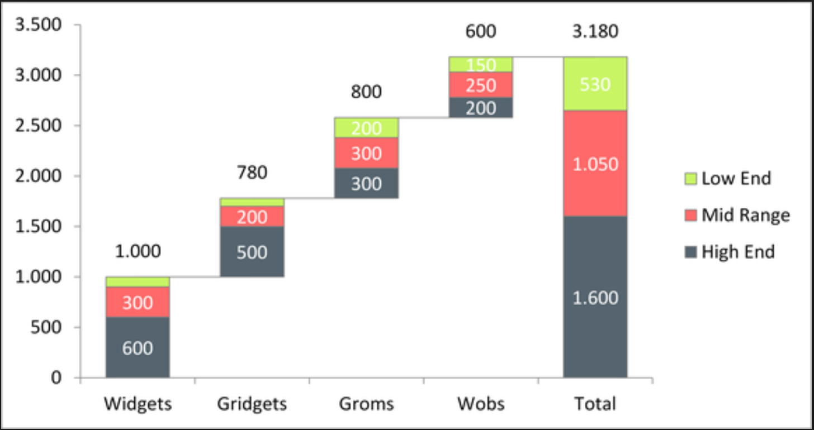
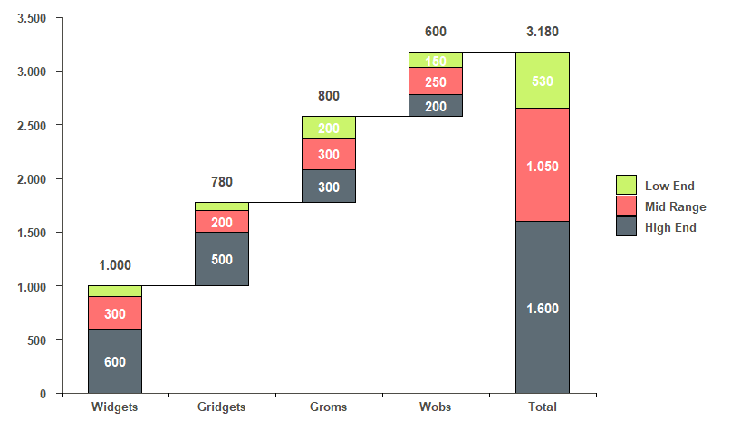

This plot was created in response to this question on StackOverflow. The objective is to replicate the following plot: 
The trick to plot waterfall charts with ggplot2 is to create a data set with the groups (x values - I’m calling this in my code as x.axis.Var) in the exact order you want to plot. After that, you need to get the start and end points of the bars for each category (categories in your legend - cat.Var) within the groups. Then, you create another group with the totals by category. You’ll also need a numeric index for the groups to manipulate the bars. Finally, get a column with the total by group for the numbers above the bars.
Suppose your dataframe looks like this:
df <-
data.frame(
x.axis.Var = rep(c("Widgets", "Gridgets", "Groms", "Wobs"), 3),
cat.Var = rep(c("High End", "Mid Range", "Low End"), each = 4),
values = c(600, 500, 300, 200, # high end
300, 200, 300, 250, # mid range
100, 80, 200, 150 # low end
)
)
Or,
x.axis.Var cat.Var values
1 Widgets High End 600
2 Gridgets High End 500
3 Groms High End 300
4 Wobs High End 200
5 Widgets Mid Range 300
6 Gridgets Mid Range 200
7 Groms Mid Range 300
8 Wobs Mid Range 250
9 Widgets Low End 100
10 Gridgets Low End 80
11 Groms Low End 200
12 Wobs Low End 150
Follow the steps below to get a new data frame:
library('tidyverse')
df.tmp <- df %>%
# \_Set the factor levels in the order you want ----
mutate(
x.axis.Var = factor(x.axis.Var,
levels = c("Widgets", "Gridgets", "Groms", "Wobs")),
cat.Var = factor(cat.Var,
levels = c("Low End", "Mid Range", "High End"))
) %>%
# \_Sort by Group and Category ----
arrange(x.axis.Var, desc(cat.Var)) %>%
# \_Get the start and end points of the bars ----
mutate(end.Bar = cumsum(values),
start.Bar = c(0, head(end.Bar, -1))) %>%
# \_Add a new Group called 'Total' with total by category ----
rbind(
df %>%
# \___Sum by Categories ----
group_by(cat.Var) %>%
summarise(values = sum(values)) %>%
# \___Create new Group: 'Total' ----
mutate(
x.axis.Var = "Total",
cat.Var = factor(cat.Var,
levels = c("Low End", "Mid Range", "High End"))
) %>%
# \___Sort by Group and Category ----
arrange(x.axis.Var, desc(cat.Var)) %>%
# \___Get the start and end points of the bars ----
mutate(end.Bar = cumsum(values),
start.Bar = c(0, head(end.Bar, -1))) %>%
# \___Put variables in the same order ----
select(names(df),end.Bar,start.Bar)
) %>%
# \_Get numeric index for the groups ----
mutate(group.id = group_indices(., x.axis.Var)) %>%
# \_Create new variable with total by group ----
group_by(x.axis.Var) %>%
mutate(total.by.x = sum(values)) %>%
# \_Order the columns ----
select(x.axis.Var, cat.Var, group.id, start.Bar, values, end.Bar, total.by.x)
This yields:
x.axis.Var cat.Var group.id start.Bar values end.Bar total.by.x
<fct> <fct> <int> <dbl> <dbl> <dbl> <dbl>
1 Widgets High End 1 0 600 600 1000
2 Widgets Mid Range 1 600 300 900 1000
3 Widgets Low End 1 900 100 1000 1000
4 Gridgets High End 2 1000 500 1500 780
5 Gridgets Mid Range 2 1500 200 1700 780
6 Gridgets Low End 2 1700 80 1780 780
7 Groms High End 3 1780 300 2080 800
8 Groms Mid Range 3 2080 300 2380 800
9 Groms Low End 3 2380 200 2580 800
10 Wobs High End 4 2580 200 2780 600
11 Wobs Mid Range 4 2780 250 3030 600
12 Wobs Low End 4 3030 150 3180 600
13 Total High End 5 0 1600 1600 3180
14 Total Mid Range 5 1600 1050 2650 3180
15 Total Low End 5 2650 530 3180 3180
Then, I can use the following code to get the plot that I want:
ggplot(df.tmp, aes(x = group.id, fill = cat.Var)) +
# \_Simple Waterfall Chart ----
geom_rect(aes(x = group.id,
xmin = group.id - 0.25, # control bar gap width
xmax = group.id + 0.25,
ymin = end.Bar,
ymax = start.Bar),
color="black",
alpha=0.95) +
# \_Lines Between Bars ----
geom_segment(aes(x=ifelse(group.id == last(group.id),
last(group.id),
group.id+0.25),
xend=ifelse(group.id == last(group.id),
last(group.id),
group.id+0.75),
y=ifelse(cat.Var == "Low End",
end.Bar,
# these will be removed once we set the y limits
max(end.Bar)*2),
yend=ifelse(cat.Var == "Low End",
end.Bar,
# these will be removed once we set the y limits
max(end.Bar)*2)),
colour="black") +
# \_Numbers inside bars (each category) ----
geom_text(
mapping =
aes(
label = ifelse(values < 150,
"",
ifelse(nchar(values) == 3,
as.character(values),
sub("(.{1})(.*)", "\\1.\\2",
as.character(values)
)
)
),
y = rowSums(cbind(start.Bar,values/2))
),
color = "white",
fontface = "bold"
) +
# \_Total for each category above bars ----
geom_text(
mapping =
aes(
label = ifelse(cat.Var != "Low End",
"",
ifelse(nchar(total.by.x) == 3,
as.character(total.by.x),
sub("(.{1})(.*)", "\\1.\\2",
as.character(total.by.x)
)
)
),
y = end.Bar+200
),
color = "#4e4d47",
fontface = "bold"
) +
# \_Change colors ----
scale_fill_manual(values=c('#c8f464','#ff6969','#55646e')) +
# \_Change y axis to same scale as original ----
scale_y_continuous(
expand=c(0,0),
limits = c(0, 3500),
breaks = seq(0, 3500, 500),
labels = ifelse(nchar(seq(0, 3500, 500)) < 4,
as.character(seq(0, 3500, 500)),
sub("(.{1})(.*)", "\\1.\\2",
as.character(seq(0, 3500, 500))
)
)
) +
# \_Add tick marks on x axis to look like the original plot ----
scale_x_continuous(
expand=c(0,0),
limits = c(min(df.tmp$group.id)-0.5,max(df.tmp$group.id)+0.5),
breaks = c(min(df.tmp$group.id)-0.5,
unique(df.tmp$group.id),
unique(df.tmp$group.id) + 0.5
),
labels =
c("",
as.character(unique(df.tmp$x.axis.Var)),
rep(c(""), length(unique(df.tmp$x.axis.Var)))
)
) +
# \_Theme options to make it look like the original plot ----
theme(
text = element_text(size = 14, color = "#4e4d47"),
axis.text = element_text(size = 10, color = "#4e4d47", face = "bold"),
axis.text.y = element_text(margin = margin(r = 0.3, unit = "cm")),
axis.ticks.x =
element_line(color =
c("black",
rep(NA, length(unique(df.tmp$x.axis.Var))),
rep("black", length(unique(df.tmp$x.axis.Var))-1)
)
),
axis.line = element_line(colour = "#4e4d47", size = 0.5),
axis.ticks.length = unit(.15, "cm"),
axis.title.x = element_blank(),
axis.title.y = element_blank(),
panel.background = element_blank(),
plot.margin = unit(c(1, 1, 1, 1), "lines"),
legend.text = element_text(size = 10,
color = "#4e4d47",
face = "bold",
margin = margin(l = 0.25, unit = "cm")
),
legend.title = element_blank()
)
And the final plot: 